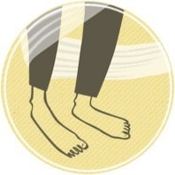

В каких случаях будет полезна психологическая помощь и консультация практического психолога:
СТРАХИ
Настоящий страх, который все остальные считают глупым, необоснованным и относятся к нему скептично. А между тем он есть! Это может быть обычный страх говорить по телефону или классический страх замкнутых пространств.
"НАВЯЗЧИВЫЕ МЫСЛИ
Обычно, это бессмысленные и абсурдные мысли. Например - если я буду наступать на дорожные трещины, то все вокруг умрут. Такие мысли могут заставить страдающего человека выполнять навязчивые действия.
НИЗКАЯ САМООЦЕНКА
Человека преследует постоянное предчувствие стыда. Из-за этого чувства приходится ограничивать свою общественную активность, не хочется выходить из дома. Возникают трудности во время общения, не удаётся выражать свои эмоции непосредственно.
ДЕПРЕССИЯ
Человек считает себя очень плохим. Мир кажется серым и скучным. Сопровождается чувством печали, скорби и апатии. Частыми источниками депрессии выступают потери близких людей. Иногда депрессия возникает без видимых причин и никак не связана с психологическими проблемами.
СЕКСУАЛЬНЫЕ РАССТРОЙСТВА
Все трудности, возникающие в отношениях между полами. Или в отношении собственного пола, мужского или женского. Всё, что мешает наслаждаться сексуальной жизнью. Или вовсе её ограничивает.
ПСИХОСОМАТИКА
Психосоматика - это воздействие психики на тело, в результате которого оно начинает болеть. Обычно это непонятные болезни и посещение больниц не даёт результатов. В данном случае помочь может только хороший психотерапевт.
Когда консультации психолога вам не помогут:
У вас нет времени
Если вы испытываете сильные страдания и вам нужна срочная психологическая помощь, лучше обратиться в больницу к психиатру или психотерапевту, где вам смогут выписать лекарства. Если вы просто хотите решить все свои проблемы за один час, то консультация частного психолога-практика вам не поможет. Работа с практическим психологом занимает больше времени. Обычно, не менее 10 встреч.
Зависимость
Консультации частного психолога не помогут при алкоголизме, наркомании или игромании. В этих случаях необходимо комплексное лечение, которое проводится в реабилитационных центрах. Кроме того, в таких случаях, требуется терапия для остальных членов семьи зависимого. Зависимость - это болезнь всей семьи, а не одного человека.
Вы - третье лицо
Пожалуйста, не обращайтесь ко мне, когда вы ищете частного психолога не для себя. Если вас кто-то попросил подобрать для него хорошего психолога-практика, порекомендуйте ему сделать это самостоятельно. Если вам кажется, что кому-то необходима психологическая помощь и консультация, но сам человек так не считает, учтите, что принудительное психологическое лечение в нашей стране возможно только в случае угрозы для жизни больного или окружающих. Такое лечение проводится в психиатрических клиниках.
Возраст
Я оказываю психологическую помощь людям, которым больше 18 лет. Если вы младше, вы скорее всего живёте с родителями и ваше психологическое состояние зависит от них. В этом случае я бы рекомендовал вашим родителям и вам обратиться за консультацией к семейному психологу.
Как проходит приём в кабинете психолога:
Что делаете вы: свободные ассоциации
Чтобы получить качественную консультацию психолога, нужно сначала рассказать о себе, своей жизни и своей проблеме.
Кабинет психолога - это место, где можно и нужно много говорить.
Краткий список того, о чем нужно говорить с психологом:
- Неприличные вещи
- Неинтересные мысли
- Глупые и откровенные истории
- Вещи, не относящиеся к делу
- Всё, что думаете о психологе
Такое общение может показаться странным. И это на самом деле так!
Такое редко происходит в обычной жизни. Но именно в этом и заключается один из смыслов
консультации у частного психолога-практика. На земле осталось не так много мест, где можно
откровенно поговорить с заинтересованным человеком.
Что делает психолог: профессиональное слушание
Пока вы говорите, личный психолог внимательно слушает.
Для того чтобы дать качественную психологическую консультацию, ему нужно вас понять.
Все люди понимают друг друга. Но психолог-практик проходит специальную подготовку, после чего делает это ещё лучше.
Иногда психолог понимает о клиенте что-то, чего сам клиент не замечает. Тогда он может сказать ему об этом.
Что ещё делает хороший психолог:
- Задаёт уточняющие вопросы
- Соблюдает тишину
- Всегда ждёт вас в своём кабинете в назначенное время
Результат помощи частного психолога
Специфическое заинтересованное отношение психолога-практика запускает в психике клиента процессы естественного восстановления.
Это можно сравнить с восстановлением поникшего растения, которое, наконец поставили на освещённое солнцем место и начали поливать.
Кроме того, психотерапия позволяет преодолеть внутренние препятствия, которые мешали психике развиваться и эволюционировать
естественным образом. Консультации частного психолога - это выгодное вложение в собственное счастье, здоровье и благополучие,
которые останутся с вами на всю жизнь.
Происходит много хорошего:
- Становится легче общаться
- Возрастают творческие способности
- Мир начинает выглядеть не таким устрашающим
- Работать становится интереснее
- Улучшаются отношения с любимыми людьми
- И так далее...
Преимущества психоанализа:
1. Индивидуальный подход
У хорошего частного психолога нет единой схемы на все случаи. Этим его работа отличается от обычного обучения, где выполняются уже готовые упражнения. Человеческая личность является более сложной, чем можно предусмотреть. Формирование особых рабочих отношений психолога-практика с каждым клиентом направлено на максимально эффективную помощь человеку.
2. Достижения сохраняются навсегда
Психоанализ - это не поддерживающая терапия, которая работает только пока на неё ходишь. Также это не мотивационные стимулирующие техники, которые обладают плавнозатухающим эффектом. Все достигнутые психоанализом изменения носят постоянный характер. Пройдя психоанализ у психолога-практика однажды, к нему больше нет необходимости возвращаться.
3. Действует сразу на всё
В психике всё взаимосвязано. Нельзя убрать что-то одно, так чтоб всё остальное не изменилось. Поэтому кроме основной жалобы попутно устраняются и другие недостатки характера. Посещение консультаций частного психолога повышает качество всей жизни.
Не откладывайте визит к частному профессиональному психологу. Чем раньше вы начнёте посещать приёмы качественного специалиста и его психологические консультации, тем больше останется времени для того, чтобы наслаждаться жизнью без проблем, страхов и депрессий. Кроме того, с годами проходить терапию становится всё сложнее.